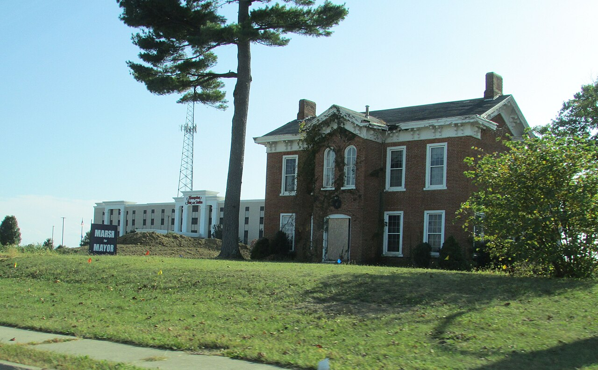
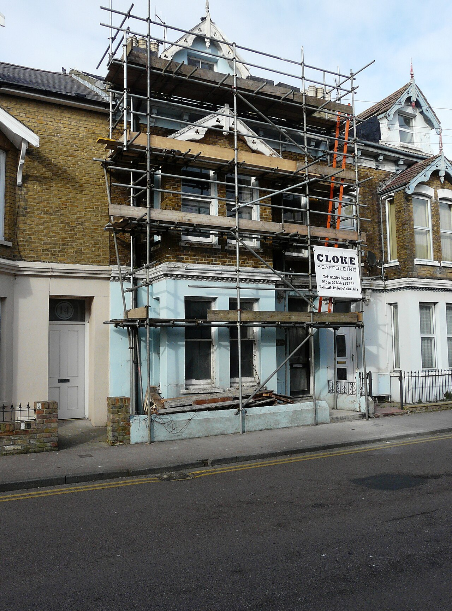
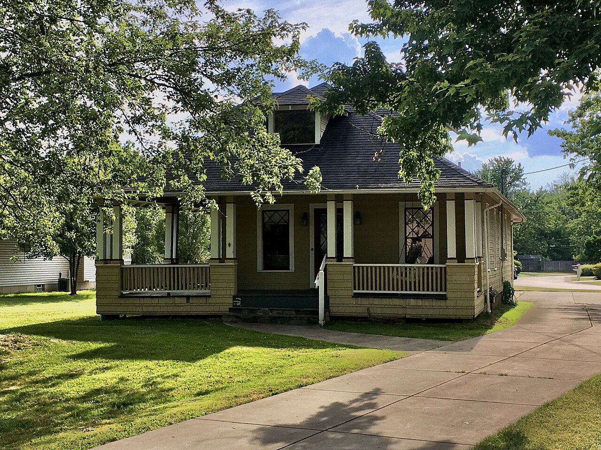

เลือกหมวดงาน
Flow ต้องการแค่ไม่กี่รูป (1-4 รูป) — ลากรูปมาวาง หรือคลิกเพื่อเลือกไฟล์ ถ้าไม่มีรูป ระบบคิดคำอธิบายฉากให้แทน
⚙️ ตั้งค่าการสร้าง
🖼️ ใช้ภาพอ้างอิงแค่ไม่กี่รูป
เริ่ม > กลาง > เสร็จ
เริ่ม > กลาง > เสร็จ
🎥 Prompt พร้อมใช้กับ
Google Flow (Veo)
Google Flow (Veo)
📤 อัปโหลดรูปเป็น
Ingredients to Video
Ingredients to Video
🔊 ได้เสียงในคลิปด้วย
Veo Native Audio
Veo Native Audio
ตัวอย่างงาน Renovate + Timelapse

เริ่มต้น
0%
»

กลางทาง
50%
»

เสร็จสมบูรณ์
100%
"เปลี่ยนไอเดีย ให้เป็นภาพที่เห็นได้จริง ด้วยพลังของ AI"
ภาพตัวอย่างประกอบจาก Wikimedia Commons (CC BY-SA) — Chris Light, John Baker, Andre Carrotflower